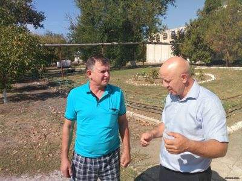
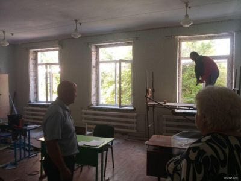
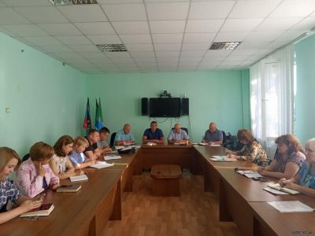
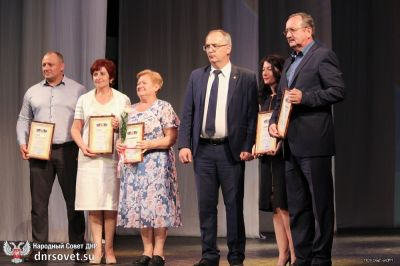
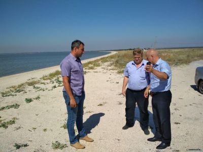
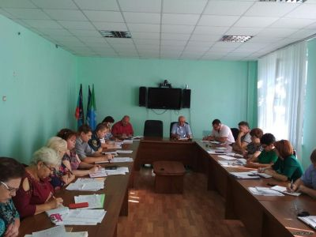
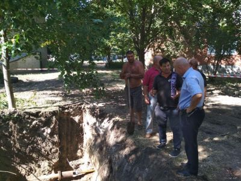
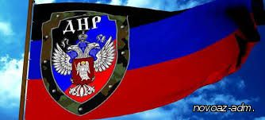
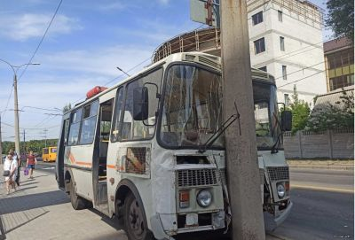

Новости

Выездное рабочее совещание по вопросу организации ремонта подводящего водовода в с. Саханка
Сегодня, 14 сентября 2020 года, глава администрации Новоазовского района Олег Моргун провел выездное рабочее совещание по вопросу организации ремонта подводящего водовода в с. Саханка. По результатам которого, было принято решение провести рабочее совещание с коммунальными службами района для согласования ремонта трассы водовода.

Ремонтные работы в МОУ "Саханская школа".
В выездом на место руководство администрации Новоазовского района провели мониторинг выполнения работ по ремонту откосов в МОУ «Саханская школа». Работы ведутся качественно и согласно установленного графика.

Аппаратное совещание
Сегодня, 14 сентября 2020 года, состоялось аппаратное совещание с начальниками структурных подразделений администрации Новоазовского района, территориальных подразделений министерств и ведомств ДНР. На совещании была рассмотрена текущая ситуация в районе, проблемные вопросы в различных отраслях хозяйственной деятельности, а также подготовка жилого фонда и социальных объектов к отопительному сезону 2020-2021г.г.
Подводя итоги совещания были даны поручения участникам и поставлены сроки их выполнения.

Владимир Бидёвка поздравил макеевчан с 330-летним юбилеем со дня основания города
В пятницу, 11 сентября, в городе Макеевке состоялось торжественное мероприятие «Макеевка 1690 – 2020» по случаю 330-летия со дня основания города. В мероприятии принял участие Председатель Народного Совета Владимир Бидёвка, депутаты, заместитель Председателя Правительства Татьяна Переверзева, министр промышленности и торговли Владимир Рущак, начальник Управления Народной милиции Денис Синенков, руководитель Центрального исполкома ОД «ДР» Алексей Муратов, жители и гости города.

Мониторинг муниципальных пляжей п.Седово.
Глава администрации Новоазовского района Олег Моргун с выездом на место проинспектировал муниципальные пляжи п.Седово с целью планирования благоустройства зон отдыха на 2021 год.

Совещание с главами местных администраций района.
Сегодня, 11 сентября 2020 года, состоялось рабочее совещание с главами местных администраций, руководителями структурных подразделений и ведомств администрации района, на котором были рассмотрены вопросы о пожарной безопасности в осенне-зимний период 2020-2021 гг., об организации функционирования пунктов обогрева населения в населенных пунктах района, о паспортизации сотрудников местных администраций, а также структурных подразделений и ведомств администрации района, о ходе выполнения бюджета за III квартал 2020 года и бюджетном запросе на 2021 год и планировании работ строительных бригад, задействованных в ремонте и восстановлении социальных объектов района на октябрь месяц.
По окончанию были даны поручения участникам совещания и поставлены сроки их выполнения.

Завершены ремонтные работы водопроводной сети.
Сегодня завершены ремонтные работы по устранению трех порывов на водопроводной сети возле жилого многоквартирного дома по адресу г. Новоазовск, ул. Энгельса 77.
В ремонтных работах были задействованы 3 вида специальной техники и бригада специалистов из 8 человек.

Глава ДНР Д.В.Пушилин поздравил с Днем освобождения Донбасса.
«Уважаемые жители Донецкой Народной Республики! Граждане Великой России! Дорогие ветераны! Поздравляю вас с Днем освобождения Донбасса – днем гордости и благодарности за подвиг советского народа в годы Великой Отечественной войны!
НИМАНИЕ!
7 сентября 2020 года с 10.00 до 12.00 пройдет "Прямая" телефонная линия с Начальник управления ПФ ДНР в Новоазовском районе Винницкой Любовью Владимировной. ТЕле. 071 329 05 70.

В Донецке в результате ДТП травмированы семь человек
3 сентября в 12:10 в Ворошиловском районе Донецка произошло дорожно-транспортное происшествие, в котором получили травмы семь пассажиров автобуса.В результате ДТП 7 пассажиров автобуса «ПАЗ» получили телесные повреждения различной степени тяжести и были доставлены в лечебные учреждения.